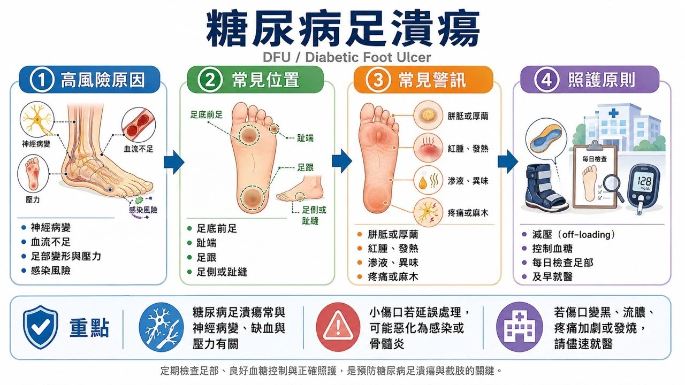
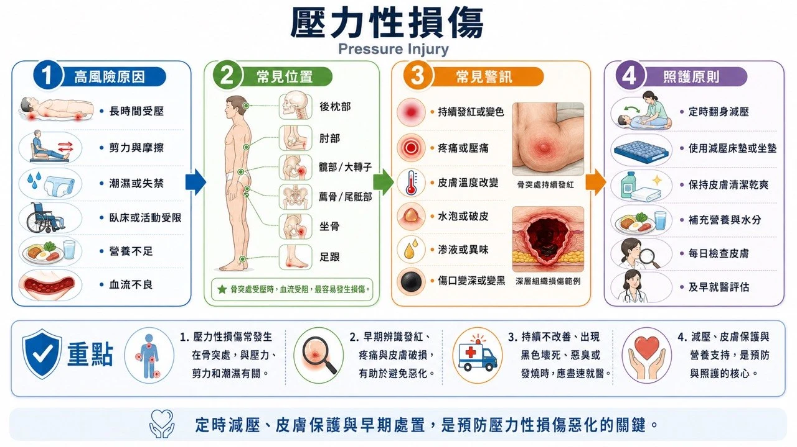
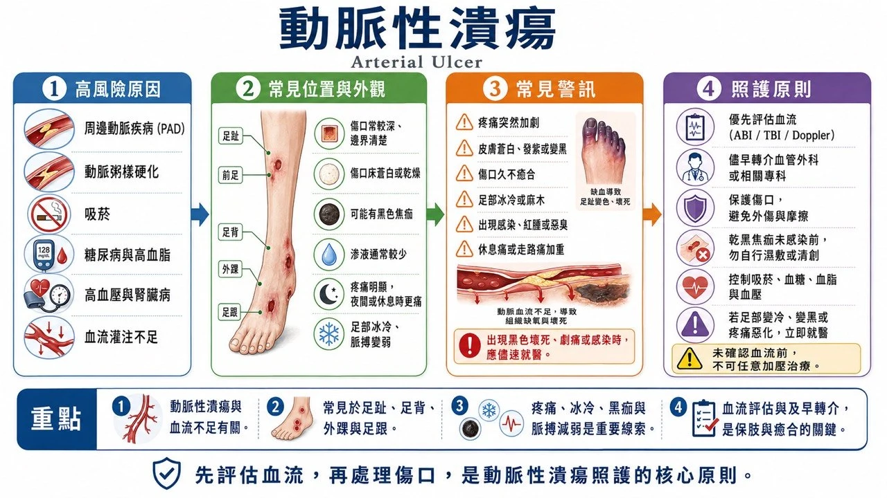
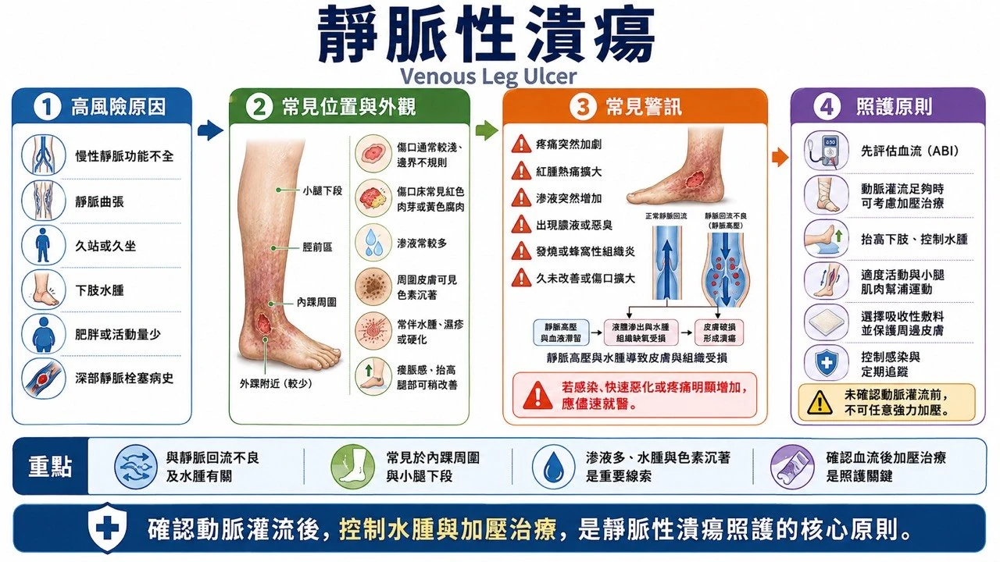

慢性傷口（醫護人員專業版）
一、慢性傷口的共通定義與評估原則
1. 時間定義（分層，而非單一門檻）
- 約 4 週適當治療仍未見預期縮小或進展 → 癒合遲緩警訊：重新評估病因、血流、感染、壓力與治療依從性
- 持續 4–6 週未癒合 → 臨床上歸入難癒合／慢性傷口管理
- 超過 3 個月 → 明確的長期未癒合傷口
2. 所有慢性傷口共用的評估項目
- 位置、數量、持續時間及復發史
- 長、寬、深、面積、潛行、竇道及腔洞
- 肉芽、腐肉、焦痂、上皮及外露深層組織比例
- 傷口邊緣、周圍皮膚、水腫及浸潤
- 滲液量、顏色、黏稠度、氣味與出血
- 疼痛程度、性質及與外觀是否相稱
- 足部／肢體感覺、活動能力及壓力來源
- 脈搏、ABI、TBI、趾壓、Doppler 波形；必要時 TcPO₂ 或皮膚灌流壓
- 臨床感染、擴散性感染、敗血症及骨髓炎警訊
- 標準化照片與面積變化率
二、各類慢性傷口（14 類）
1. 糖尿病足潰瘍 DFU


定義與特徵：糖尿病患者足部全層皮膚缺損，與神經病變、足部變形、反覆壓力及 PAD 有關。好發足底蹠骨頭、足跟、趾端、趾間及鞋具壓迫處。神經病變型位於承重點、周圍胼胝、疼痛不明顯；缺血型位於趾端或足外側、較痛、皮膚冰冷脈搏弱。病因明確即可診斷，不需等 4 週。
病因與危險因子：感覺運動自主神經病變；足部變形、Charcot foot 及異常足壓；不合適鞋具、赤腳或自行修剪胼胝；PAD、腎衰竭、透析、吸菸、高齡；血糖控制不佳、視力不良及既往潰瘍或截肢；感染及骨髓炎。
評估工具：10-g 單絲、音叉震動覺；足背脛後動脈及灌流；ABI、TBI／趾壓及 Doppler（血管鈣化可使 ABI 假性升高）；probe-to-bone、X 光，骨髓炎疑慮考慮 MRI；SINBAD／UT／WIfI 分類；感染用 IWGDF/IDSA 分級；清創後深部組織檢體優於表面拭子。
治療：有效減壓是足底神經病變性潰瘍的核心；移除胼胝與失活組織（嚴重缺血先評估血流）；臨床感染才用全身抗生素、不治療定植；PAD 儘早評估血管重建；依滲液與傷口床選敷料；難癒合者評估負壓、細胞組織產品；高壓氧非常規治療，僅特定病例個別評估。
預防衛教：每日檢查足底趾間足跟與鞋內；不赤腳、不用熱水袋、不自行剪胼胝；合腳鞋具、治療鞋墊；控糖、戒菸；癒後持續減壓並定期足部風險評估。（IWGDF 2023）
2. 壓力性損傷 Pressure injury


定義與特徵：皮膚及／或深部軟組織因持續壓力（或壓力＋剪力）產生的局部損傷。好發薦尾、足跟、坐骨、大轉子、踝部及枕部；也見於氧氣面罩、鼻胃管、石膏等器材下。依 Stage 1–4、Unstageable 及 DTPI 分類。可短時間形成；4 週未改善即進入難癒合評估。
病因與危險因子：無法翻身、癱瘓、鎮靜或意識障礙；壓力剪力摩擦及不良微環境；失禁潮濕發燒多汗；灌流不足、低血壓、貧血；營養不足、體重過低或肥胖；高齡、末期疾病及器材壓迫。
評估工具：全身皮膚檢查（含器材下方）；Braden Scale 等風險工具（不取代臨床判斷）；深度潛行竇道壞死紀錄；骨髓炎評估（probe-to-bone、X 光、MRI、骨檢查）；快速惡化評估深部感染與壞死性軟組織感染；深色膚色同時觀察溫度、硬度、疼痛及組織一致性。
治療：完整減壓翻身與壓力再分配；合適床墊坐墊及足跟懸空；依血流、壞死型態及目標選擇清創；管理感染失禁疼痛營養攣縮；深部傷口評估負壓；大型 Stage 3–4 考慮手術清創及皮瓣重建；穩定乾燥無感染的缺血性足跟焦痂不應任意清創，先評估血流。
預防衛教：依個別風險制定翻身頻率；每日檢查骨突及器材下方；控制失禁潮濕、皮膚屏障產品；正確移位避免拖拉；坐姿定時減壓；支撐面不能完全取代翻身。（International Pressure Injury Guideline 2019）
3. 動脈性潰瘍 Arterial ulcer


定義與特徵：動脈灌流不足造成缺血、壞死或潰瘍。常見趾端、趾間、足跟、外踝、足外側及受壓處。Punched-out 外觀、基底蒼白或壞死、滲液少；周圍冰冷蒼白無毛、脈搏弱；休息痛、夜間痛或垂足後改善。潰瘍合併缺血即可診斷。
病因與危險因子：動脈粥樣硬化性 PAD；糖尿病、吸菸、高血壓、高血脂；慢性腎病及透析；血栓、栓塞、血管炎；局部壓力或外傷疊加低灌流。
評估工具：脈搏、溫度、膚色及微血管回填；ABI（鈣化疑慮用 TBI、趾壓或 Doppler 波形）；TcPO₂ 或皮膚灌流壓評估癒合可能；WIfI 分類；Duplex、CTA、MRA 或血管攝影規劃重建。
治療：儘速轉介血管專科評估血管內或外科重建；抗血小板、降脂、血壓、糖尿病管理及戒菸；缺血未處理前避免積極清除穩定乾燥焦痂；避免不適當高壓壓迫；感染與濕性壞疽緊急處理；血流改善後再清創重建。
預防衛教：戒菸控糖控脂控壓；每日足檢、避免赤腳燙傷鞋壓；不自行剪焦痂雞眼；休息痛、趾端變黑、傷口或足部冰冷立即就醫。（SVS；Conte 2019 GVG）
4. 靜脈性潰瘍 Venous leg ulcer


定義與特徵：慢性靜脈高壓造成皮膚變化及潰瘍。好發小腿 gaiter area（尤其內踝）。較淺、邊緣不規則、滲液多；伴水腫、靜脈曲張、色素沉著、脂肪皮膚硬化及靜脈性濕疹。多數定義為靜脈疾病背景下持續 4–6 週未癒合的下腿潰瘍。
病因與危險因子：深層或表淺靜脈逆流；靜脈阻塞或既往 DVT；小腿肌幫浦不良；肥胖、久站、活動不足、高齡；既往靜脈性潰瘍。
評估工具：水腫、靜脈曲張、色素及硬化評估；足部脈搏及 ABI（糖尿病或鈣化加做 TBI）；Duplex 評估逆流或阻塞；CEAP 分類；不因表面培養陽性即診斷感染。
治療：確認動脈灌流可接受後，壓迫治療是核心；多層繃帶、短伸展系統或壓迫襪；抬腿、行走及小腿肌幫浦運動；控制滲液、保護周圍皮膚、適當清創；評估表淺靜脈介入；抗生素僅用於臨床感染。
預防衛教：癒後長期治療型彈性襪；活動、踝關節運動及體重控制；避免久站或雙腳下垂；保濕並處理靜脈性濕疹；定期檢查壓迫襪尺寸彈性與穿法。
5. 淋巴水腫／長期水腫相關傷口
定義與特徵：淋巴回流障礙或長期組織液累積造成皮膚脆弱、淋巴液滲漏及潰瘍。常見小腿、踝部、足背或癌症治療後肢體。非凹陷性水腫、皮膚增厚、乳突狀變化及淋巴液滲出。
病因與危險因子：原發性淋巴異常；淋巴結切除、放療或腫瘤阻塞；肥胖、活動不足、反覆蜂窩性組織炎；慢性靜脈疾病、心衰竭或腎病；皮膚屏障破損及真菌感染。
評估工具：肢體周徑、體積、皮膚厚度及 Stemmer sign；排除 DVT、急性蜂窩性組織炎與心衰竭代償不全；下肢傷口評估動脈灌流；必要時 Duplex、淋巴攝影；記錄滲漏量及浸潤。
治療：排除禁忌後個別化壓迫治療；皮膚照護、運動、抬高與淋巴水腫復健；高吸收敷料管理淋巴液；反覆蜂窩性組織炎依感染指引治療；特定患者評估淋巴手術或減積手術。
預防衛教：每日清潔保濕、處理趾間黴菌；避免割傷燙傷及不必要穿刺；依處方穿壓迫衣物；運動及體重管理；紅熱痛＋發燒立即評估蜂窩性組織炎。
6. 混合型動靜脈潰瘍
定義與特徵：同時存在靜脈高壓與動脈灌流不足。可同時見水腫、色素沉著與足部冰冷、脈搏減弱；位置外觀介於典型靜脈與動脈之間。
評估工具：ABI、TBI／趾壓、Doppler 波形及必要時 TcPO₂；動脈與靜脈 Duplex；不應只依 ABI 單一數值決定壓迫強度。
治療：由血管專科先完成灌流風險分層；輕至中度動脈疾病可在專業監測下用降低／調整後的壓迫；嚴重缺血優先評估血管重建；清創與敷料依灌流及活性調整；感染或壞疽加速處理。
預防衛教：不自行使用高壓彈性襪或繃帶；依處方壓迫、活動與足部保護；戒菸及管理動脈硬化危險因子；疼痛增加、足部變冷或變色時立即停止並就醫。
7. 放射性傷口 Radiation-induced wound

定義與特徵：放射線造成血管內皮損傷、纖維化、組織缺氧及再生能力下降。急性皮膚炎見於治療期間；晚期潰瘍可於數月數年後出現。常見乳房／胸壁、頭頸、骨盆或既往放射區。周圍皮膚萎縮、纖維化、微血管擴張、色素改變。
評估工具：放療部位、時間與劑量紀錄；評估纖維化、骨外露、瘻管及深部感染；影像排除骨放射性壞死、膿瘍或腫瘤復發；不典型或進展性傷口活檢；必要時血流及組織氧合。
治療：優先排除腫瘤復發；溫和清創及無創傷性敷料；治療感染疼痛營養；選定病例專科評估高壓氧；廣泛纖維化或壞死可能需切除至健康組織＋血流良好的皮瓣重建。
預防衛教：放射區避免摩擦燙傷日曬；溫和清潔保濕；不自行用刺激性藥物或黏著材料；新潰瘍、硬塊、出血或疼痛儘早回腫瘤科／整形外科。（NCI）
8. 癌症傷口 Malignant／fungating wound

定義與特徵：腫瘤直接侵犯皮膚或皮膚轉移造成的潰瘍、蕈狀增生或壞死。常見乳房、頭頸、皮膚癌或轉移病灶。大量滲液、惡臭、易出血、疼痛及外生腫塊。診斷由腫瘤侵犯決定。
評估工具：腫瘤病史、病理及影像；大小隆起壞死出血滲液異味疼痛；不明腫瘤性傷口需活檢；區分定植、局部感染與全身感染；評估大血管侵犯及災難性出血風險。
治療：以腫瘤治療、症狀控制及患者目標為核心；低沾黏高吸收敷料及皮膚保護膜；異味以清潔、控制壞死與特定局部治療管理；易出血組織避免粗暴清創；準備局部止血及緊急出血計畫；評估放療、全身治療、手術或介入止血；緩和醫療、疼痛科及心理支持及早介入。
預防衛教：低創傷換藥及出血處理教學；備妥深色毛巾、止血物品及緊急聯絡方式；觀察出血感染疼痛滲液；尊重隱私、氣味控制及生活目標；多數目標是症狀控制而非保證完全癒合。（Macmillan）
9. 手術後難癒合傷口
定義與特徵：切口未在預期期間癒合，或裂開、感染、竇道、慢性滲液或植入物外露。見於腹部、胸骨、會陰、骨科與重建手術區。術後 4 週缺乏進展即應完整病因再評估；區分表淺裂開、深部筋膜裂開及器官腔室感染。
評估工具：手術方式、植入物及術後經過；深度、筋膜完整性、潛行、竇道及滲液；超音波或 CT 評估深部液體膿瘍；清創後深部培養；長期竇道排除異物、骨髓炎、腸瘻或腫瘤。
治療：控制感染、移除壞死、處理血腫膿瘍；確認是否移除植入物；適當病例負壓治療；處理死腔、筋膜缺損及瘻管；穩定後延遲關閉、植皮或皮瓣重建；內臟外露或筋膜裂開屬外科急症。
預防衛教：術前戒菸、血糖及營養最佳化；SSI 預防規範；避免張力與不當活動；教導紅腫滲膿裂開發燒警訊；明確術後追蹤安排。
10. 發炎性傷口 Inflammatory ulcer
定義與特徵：由免疫失調或全身性發炎疾病造成的潰瘍總稱（中性球性皮膚病、結締組織疾病、血栓性疾病等）。疼痛劇烈、邊緣發炎、快速擴大或多發。
評估工具：完整皮膚、關節、腸胃及全身病史；CBC、發炎指標、自體抗體、補體及凝血；傷口邊緣活檢（病理＋細菌黴菌分枝桿菌）；排除感染、血管疾病與惡性腫瘤；皮膚科與風濕免疫科共同評估。
治療：治療基礎免疫或發炎疾病；低創傷敷料及疼痛控制；未排除壞疽性膿皮症前避免積極清創；免疫治療前合理排除感染；跨科共同照護。
預防衛教：避免不必要穿刺手術及反覆機械性清創；持續控制基礎疾病；發炎突然擴大、疼痛惡化或發燒立即就醫；不自行停用免疫調節藥物。
11. 血管炎相關潰瘍 Vasculitic ulcer
定義與特徵：血管壁發炎造成血管破壞、血栓與組織缺血。常見雙側小腿及踝部；由紫斑、網狀青斑、結節或水泡進展為疼痛性壞死潰瘍；可能伴腎、肺、神經或關節症狀。
評估工具：新鮮病灶適當深度活檢（必要時直接免疫螢光）；CBC、腎肝功能、尿液、ESR/CRP、ANA、ANCA、補體等個別化檢查；依風險查 B、C 肝及其他感染；血流檢查排除共存 PAD；系統性症狀進行器官評估。
治療：治療原發病因及系統性血管炎；溫和清潔、疼痛控制與適當敷料；清創前評估血流及發炎活性；免疫抑制由專科決定；不能因表面菌落延誤血管炎治療。
預防衛教：監測腎功能、尿液及系統性症狀；避免吸菸、低溫與外傷；血尿、呼吸困難、咳血、神經症狀或快速皮膚壞死緊急就醫。
12. 壞疽性膿皮症 Pyoderma gangrenosum
定義與特徵：罕見中性球性皮膚病，不是細菌性「膿皮症」。由膿疱或小傷口快速擴大為極度疼痛的潰瘍；紫紅色、潛行或破壞性邊緣及壞死基底；常見小腿，也見於手術切口、造口。外傷或清創可引發 pathergy 使病灶惡化。
評估工具：記錄疼痛、擴大速度、邊緣與 pathergy；活檢主要用於排除感染、血管炎及腫瘤（病理可能僅見非特異性中性球浸潤）；組織同時送細菌黴菌分枝桿菌檢驗；評估 IBD、關節病及血液疾病；及早皮膚科會診。
治療：避免未受控制病灶的積極外科清創；低創傷敷料及充分止痛；局部或全身免疫調節由皮膚科決定；確有感染同時治療，但不能只因培養陽性就當成感染性潰瘍；疾病控制後才評估重建。
預防衛教：隨身註記 壞疽性膿皮症 (PG) 及 pathergy 風險；非必要避免皮膚穿刺與手術；換藥減少摩擦與黏著損傷；病灶突然擴大或新發膿疱立即回診。（DermNet）
13. 非典型感染造成的慢性傷口
定義與特徵：結核菌、非結核分枝桿菌、深部黴菌、寄生蟲或特殊細菌造成，不符合一般細菌性感染表現。慢性結節、竇道、膿瘍、壞死或長期少量滲液；常見於手術、注射、醫美、水域暴露、外傷或免疫低下者；對一般抗生素反應不佳。
評估工具：詳細暴露、旅遊、手術及用藥史；取得深部組織（不只表面拭子）；分別申請一般細菌、厭氧菌、黴菌、分枝桿菌培養及病理；必要時分子檢測或特殊染色；影像評估範圍；採檢前與感染科及微生物實驗室溝通保存與培養條件。
治療：依確定病原與藥敏選擇療程（部分需數月、多重藥物）；合併膿瘍壞死或異物時手術；未取得適當檢體前，避免反覆短期廣效抗生素掩蓋診斷；感染科、皮膚科、外科及微生物團隊共同處理。
預防衛教：外傷後記錄水域土壤動物暴露；醫療與美容處置落實無菌；不共用藥膏或自行長期使用抗生素；治療期間遵守長療程及藥物監測。
14. 不明原因、長期未癒合傷口
可能被遺漏的原因：動脈靜脈或混合型血管疾病；持續壓力摩擦或未充分減壓；糖尿病及感覺神經病變；慢性或非典型感染；骨髓炎、異物、瘻管或植入物感染；血管炎、壞疽性膿皮症 (PG) 及其他發炎性疾病；皮膚癌、腫瘤侵犯或放射性傷害；藥物、營養、免疫及自傷因素。
評估：從病史、理學檢查及機轉重新開始；重新測量並檢查原治療是否真正執行；完整血管與神經評估；依疑慮影像檢查；傷口邊緣及基底活檢（病理＋多類微生物）；檢視藥物營養免疫及全身疾病；多專科討論。
治療原則：暫停無效或可能有害的治療；先確認病因再決定清創、壓迫、減壓或免疫治療；未排除缺血前不高壓壓迫；未排除 壞疽性膿皮症 (PG) 前避免反覆積極清創；未排除腫瘤前不要只持續換藥；病因處理後再評估進階敷料、生物製劑、負壓或重建。
衛教：固定方式拍照量測；明確告知 4 週療效檢查點；擴大、邊緣異常、疼痛加劇、反覆出血或治療無效時提早轉診；避免自行長期使用抗生素類固醇或刺激性消毒劑；建立單一主要照護團隊。
三、全身與營養評估的重要修正
建議同時評估：非刻意體重下降；BMI 及肌肉量；實際熱量與蛋白質攝取；吞嚥、牙齒及腸胃功能；CRP 等發炎狀態；肝腎功能及水分狀態；CBC、鐵、維生素與微量元素檢查的臨床適應症。
最後更新：2026-08-27